to perform RD using GP functions
Arguments
- X
forcing variable
- Y
Y vector (outcome variable)
- cut
cut point
- alpha
confidence level (default = 0.05)
- b
bandwidth (default = NULL)
- trim
a logical value indicating whether you want to do an automatic trim at a specific value of trim_k_value (default=FALSE)
- trim_k_value
a numerical value indicating the kernel value that you want to trim above (default = 0.1)
- scale
a logical value indicating whether you want to scale the covariates (default = TRUE)
Examples
n <- 100
tau <- 3
cut <- 0
x <- rnorm(n, 0, 1)
y <- rnorm(n, 0, 1) + tau*ifelse(x>cut, 1, 0)
gp_rdd.out <- gp_rdd(x, y, cut)
gp_rdd_plot(gp_rdd.out)
